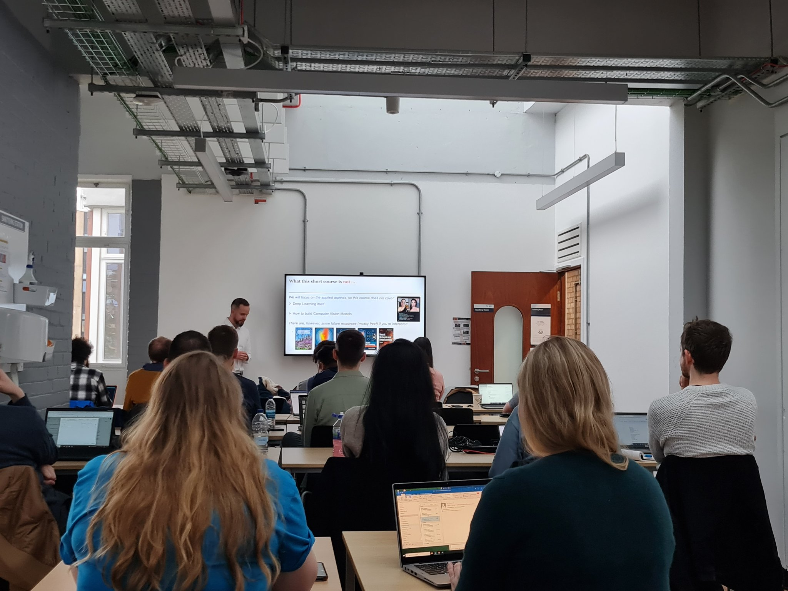

Analyzing with Images as Data
Pre-conference workshop · 11 May 2023
In the classroom
During my time at the University of Basel, I regularly taught classes about US politics as well as about party leaders and applied quantitative methods. Moreover, I supervised seminar papers on the BA level and provided help with R on both BA and MA level.
During my time as a high school teacher, I was awarded the NVLM-Prize for the best series of lessons in civics.

University of Basel
Workshops & earlier teaching
Pre-conference workshop · 11 May 2023
The Legitimating of Empire — Nikolai Ia. Danilevskii's Russia and Europe · MA Tutorial · Spring 2015